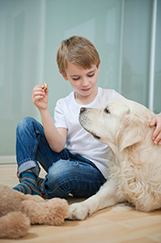

Salmonella Infection
 ShareCompartir
ShareCompartir
Salmonella is a group of bacteria that can live in the intestinal tract of many different animals. Salmonellosis (sal-mohn-el-OH-sis) is a bacterial disease caused by Salmonella.
Although Salmonella is most often spread when a person eats contaminated food, the bacteria also can be passed between people and animals. Many different animals and pets can carry these germs. Animals known to commonly spread Salmonella to humans include
- Reptiles (turtles, lizards, and snakes)
- Amphibians (frogs and toads)
- Poultry (chicks, chickens, ducklings, ducks, geese, and turkeys)
- Other birds (parakeets, parrots, and wild birds)
- Rodents (mice, rats, hamsters, and guinea pigs)
- Other small mammals (hedgehogs)
- Farm animals (goats, calves, cows, sheep, and pigs)
- Dogs
- Cats
- Horses
How do animals and people become infected?
Animals become infected with Salmonella through their environment, by eating contaminated food, or from their mothers before they are even born or hatched. Salmonella is naturally in the intestines of many different animals. Animals with Salmonella shed the bacteria in their stool which can easily contaminate their body parts (fur, feathers, or scales) and anything in areas where these animals live and roam (terrarium or aquarium, chicken coop, pen or fencing, countertops, sinks, etc.). It is important to know that many animals can carry Salmonella and still appear healthy and clean.
People can get a Salmonella infection if they do not wash their hands after contact with animals carrying Salmonella or their environment, such as their bedding, food, or tank water. For example, some pet products, like pet foods and treats, can be contaminated with Salmonella and other germs. Pet food and treats that may be contaminated include dry dog or cat food, dog biscuits, pig ears, beef hooves, and rodents used to feed reptiles (including frozen feeder rodents). Additionally, reptiles and amphibians that live in tanks or aquariums can contaminate the water with Salmonella, which can make people sick even if they don’t touch the animal.
Who is most at risk for serious illness?
Anyone can get sick from Salmonella, but some people are more likely than others to get salmonellosis. People who are more likely to get salmonellosis include:
- infants;
- children 5 years of age and younger;
- adults aged 65 and older;
- people with weakened immune systems, such as people with HIV/AIDS, organ transplant patients, and people receiving chemotherapy.
The best way to prevent getting Salmonella from animals is to always wash your hands with soap and running water right after contact with these animals, their environments, or their stool.
Do
-
Wash your hands thoroughly with soap and water
- Right after touching animals.
- After touching your pet’s food (like dry dog or cat food, frozen feeder rodents) or treats (like rawhide bones, pig ears, biscuits).
- After touching the areas where they live and roam.
- Use running water and soap, if possible.
- Use hand sanitizer if running water and soap are not available.
- Be sure to wash your hands with soap and water as soon as a sink is available.
- Adults should always supervise hand washing for young children.
- Use soap or a disinfectant to thoroughly clean any surfaces that have been in contact with animals. Do not let children 5 years of age and younger do this task. Children 6 years of age and older can help with cleaning and disinfecting but only if they are supervised by an adult.
- Clean your pet’s cage, terrarium, or aquarium and its contents (such as food and water bowls) outdoors, if possible. If you must clean your pet’s habitat indoors, use a bathtub or large sink that can be cleaned and disinfected afterward. Avoid using a kitchen sink if possible.
- Use a bleach solution to clean and disinfect.
Do Not
- Do not let children 5 years of age and younger, the elderly, or people with weakened immune systems handle or touch animals that can spread Salmonella (like turtles, water frogs, or poultry). They should also try not to touch the water from the animals’ containers or aquariums.
- Avoid keeping live poultry, amphibians, and reptiles in homes and facilities with children 5 years of age and younger or people with weakened immune systems.
- Never eat or drink around high-risk animals (like turtles, water frogs, chicks, ducklings), or in areas where they live and roam.
- Keep animals away from areas where food and drinks are prepared, served, or stored, such as kitchens or outdoor patios.
- Do not ask children 5 years of age and younger, the elderly, or people with weakened immune systems to clean pets’ habitats and their contents.
- Persons 65 years of age and older and those with weak immune systems should wear disposable gloves if they have to clean their pet’s habitat.
- Once you finish cleaning, throw out the dirty wash water in a toilet or sink that is not used for food preparation or for drinking water.
What are the symptoms of a Salmonella infection?
People
People infected with Salmonella might have diarrhea, vomiting, fever, and abdominal cramps. Infants, the elderly, and people with weak immune systems are more likely than others to develop severe illness. Please visit CDC’s Salmonella website for more information.
Pets
Many animals with Salmonella have no signs of illness at all and appear healthy. Pets that become sick from Salmonella infection typically have diarrhea that may contain blood or mucus. Sick animals may seem more tired than usual and may vomit or have a fever. If your pet has these signs of illness or you are concerned that your pet may have a Salmonella infection, please contact your pet's veterinarian.
Since there have been several pet treats recalled due to contamination with Salmonella, you should tell your veterinarian if your pet recently consumed a product that has been recalled. Do not feed your pet any more of the recalled product. Throw the product away immediately.
How can Salmonella infections be diagnosed and treated?
People
Salmonella infections in people usually resolve within 5-7 days, and most do not require treatment other than drinking plenty of fluids. People with severe diarrhea may need to spend time in a hospital getting rehydrated with intravenous fluids. Lab tests are needed to determine if Salmonella is the cause of a person’s illness. For more information about diagnosis and treatment, please visit CDC’s Salmonella website.
Pets
If you suspect that your pet has Salmonella, see your veterinarian. Salmonella infections may require prompt treatment with supportive care and fluids. If your pet is very sick, it may need to be treated with antibiotics or be hospitalized in a veterinary clinic. Your pet's veterinarian is the best source of advice on your pet's health.
Learn more about salmonellosis at CDC's Salmonella website, which includes answers to frequently asked questions, technical information, and additional resources.
CDC educational materials
Pets Can Make People Sick
CDC Expert Commentary, Medscape video
Selected Multistate Outbreaks of Salmonella Gastrointestinal Diseases from Animals
Live poultry
Risk of Human Salmonella Infections from Live Baby Poultry
Feature
Keeping Backyard Poultry
Feature
Healthy Pets Healthy People: Backyard Poultry
Why Parents Should Think Twice Before Giving Baby Birds to Young Children for Easter
Kidtastics podcast
Live Baby Poultry and Preventing Salmonella Infections
Poster; PDF versions and En español
Peep, chirp, quack! What you should know about Salmonella if you keep live poultry
Formatted article [PDF-1 page]
Reptiles
Reptiles, Amphibians, and Salmonella
Feature
The Trouble with Turtles
Minute of Health podcast
Podcast: The Trouble with Turtles
A Cup of Health podcast
Wash Away Salmonella
Minute of Health podcast:
Aquatic frogs
CDC Warns That Water Frogs Can Make Your Child Sick [ PDF - 1 page ]
Formatted article
Reptiles, Amphibians, and Salmonella
Feature
Water Frogs, Aquariums, and Salmonella -- Oh My!
Kidtastics podcast
Don't Kiss a Frog!
Kidtastics podcast
Salmonella Infection and Water Frogs
Podcast
Wash Away Salmonella
Minute of Health podcast
Pet food
Salmonella from Dry Pet Food and Treats
Feature
Podcast: Tips to Reduce Your Risk of Getting a Salmonella Infection from Dry Pet Food
Podcast
CDC reports and recommendations
Live poultry
Compendium of Measures to Prevent Disease Associated with Animals in Public Settings, 2013 [ PDF - 19 pages ]
Multistate Outbreaks of Salmonella Infections Associated with Live Poultry --- United States, 2007
Morbidity and Mortality Weekly Report. January 23, 2009 / 58(02);25-29.
Notes from the Field: Multistate Outbreak of Human Salmonella Infections Linked to Live Poultry from a Mail-Order Hatchery in Ohio- March-September 2013.
Morbidity and Mortality Weekly Report. March 14, 2014 / 63(10); 222.
Notes from the Field: Multistate outbreak of Salmonella Infantis, Newport, and Lille Infections linked to live poultry from a single mail-order hatcher in Ohio- March-September, 2012.
Morbidity and Mortality Weekly Report. March 22, 2013 / 62(11);213-213.
Three Outbreaks of Salmonellosis Associated with Baby Poultry from Three Hatcheries --- United States, 2006
Morbidity and Mortality Weekly Report. March 30, 2007 / 56(12);273-276.
Salmonellosis Associated with Chicks and Ducklings --- Michigan and Missouri, Spring 1999
Morbidity and Mortality Weekly Report. April 14, 2000 / 49(14);297-9.
Salmonella Serotype Montevideo Infections Associated with Chicks -- Idaho, Washington, and Oregon, Spring 1995 and 1996
Morbidity and Mortality Weekly Report. March 21, 1997 / 46(11);237-239.
Reptiles
Lizard-Associated Salmonellosis -- Utah
Morbidity and Mortality Weekly Report. August 21, 1992 / 41(33);610-611.
Multistate Outbreak of Human Salmonella Infections Associated with Exposure to Turtles --- United States, 2007--2008
Morbidity and Mortality Weekly Report. January 25, 2008 / 57(03);69-72.
Multistate Outbreak of Human Salmonella Typhimurium Infections Associated with Pet Turtle Exposure --- United States, 2008
Morbidity and Mortality Weekly Report. February 26, 2010 / 59(07);191-196.
Recent Multistate Outbreaks of Human SalmonellaInfections Acquired from Turtles: A Continuing Public Health Challenge
Clinical Infectious Diseases. (2010);50(4):554-559.
Reptile-Associated Salmonellosis --- Selected States, 1998--2002
Morbidity and Mortality Weekly Report. December 12, 2003 / 52(49);1206-1209.
Reptile-Associated Salmonellosis -- Selected States, 1996-1998
Morbidity and Mortality Weekly Report. November12, 1999 / 48(44);1009-1013.
Turtle-Associated Salmonellosis in Humans --- United States, 2006--2007
Morbidity and Mortality Weekly Report. July 6, 2007 / 56(26);649-652.
Salmonellosis Associated with Pet Turtles --- Wisconsin and Wyoming, 2004
Morbidity and Mortality Weekly Report. March 11, 2005 / 54(09);223-226.
Aquatic frogs
Multistate Outbreak of Human Salmonella Typhimurium Infections Associated with Aquatic Frogs --- United States, 2009
Morbidity and Mortality Weekly Report. January 8, 2010 / 58(51&52);1433-1436.
Pet food
Multistate Outbreak of Human Salmonella Infections Caused by Contaminated Dry Dog Food --- United States, 2006--2007
Morbidity and Mortality Weekly Report. May 16, 2008 / 57(19);521-524.
Notes from the Field: human Salmonella Infantis infections linked to dry dog food-United States and Canada, 2012
Morbidity and Mortality Weekly Report. June 15, 2012 / 61(23);436-436.
Human Salmonella Infections Linked to Contaminated Dry Dog and Cat Food, 2006-2008
Pediatrics. 2010 Sep;126(3):477-83.
Update: Recall of Dry Dog and Cat Food Products Associated with Human SalmonellaSchwarzengrund Infections --- United States, 2008
Morbidity and Mortality Weekly Report. November 7, 2008 / 57(44);1200-1202.
Other animals
Morbidity and Mortality Weekly Report. February 1, 2013 / 62(04);73-73.
- Page last reviewed: September 24, 2015
- Page last updated: September 24, 2015
- Content source: